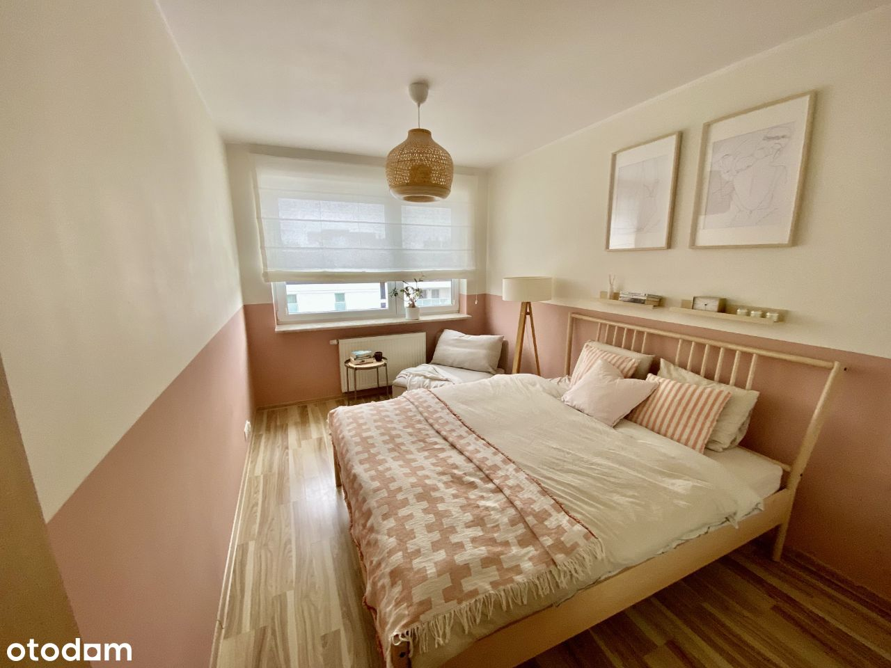

Dzień dobry,
Do sprzedania mamy 4 pokojowe mieszkanie na ostatnim piętrze na nowoczesnym Osiedlu Wilno.
Mieszkanie składa się z:
- Głównej sypialni: 12,7m2
- Sypialni 2: 11 m2
- Sypialni 3: 10,7 m2
- Salonu z aneksem kuchennym 21 m2
- Hol u12m2
- Łazienki (z WC) 4,6 m2
- WC 2,1 m2
- Balkonu 3,8 m2
Do mieszkania przynależy miejsce parkingowe w garażu podziemnym oraz duży schowek tuż za nim (dodatkowe płatne).
Mieszkanie znajduje się na 3 piętrze, w budynku jest winda.
W 2023 roku w mieszkaniu została zamontowana klimatyzacja marki Gree - cała instalacja poprowadzona jest poza mieszkaniem. Mieszkanie zostało również odmalowane i delikatnie odświeżone (m.in. wykuty tunel pod TV, wymienione gniazdka i włączniki elektryczne, zamontowane zaciemniające rolety w sypialniach).
W łazienkach zostały wymienione baterie umywalkowe oraz wannowa, wymienione zostały również meble w głównej łazience. Toalety w zabudowie Geberit.
Pokoje są jasne, przestronne i ustawne.
W głównej sypialni można stworzyć wygodne miejsce do pracy dla dwóch osób (załączamy zdjęcia z dwoma różnymi aranżacjami tego pokoju).
Poza zabudową kuchenną wraz ze sprzętami AGD (Samsung, AEG, Electrolux) nie planujemy zostawiać umeblowania. Pozostajemy jednak otwarci na negocjacje w tym temacie w przypadku, gdyby ktoś chciał się wprowadzić od razu.
Czynsz za mieszkanie to obecnie przy czterech osobach ok 1 200 zł (woda, ogrzewanie, wywóz śmieci, opłaty administracyjne i związane z utrzymaniem osiedla).
W częściach wspólnych jest także rowerownia/wózkownia przynależna do każdej klatki.
Wspólnota działa bardzo sprawnie, zaangażowana społeczność sąsiedzka. Bezpośrednio przed blokiem mały plac zabaw dla dzieci.
Osiedle z dobrym dojazdem do centrum przez Dworzec Wileński lub Dworzec Wschodni. Liczne połączenia autobusowe oraz dedykowana stacja kolejowa dla mieszkańców osiedla.
Serdecznie zachęcamy do kontaktu i osobistego obejrzenia mieszkania oraz okolicy.
Pracujemy głównie zdalnie, więc bez problemu dogadamy się co do terminu spotkania.
